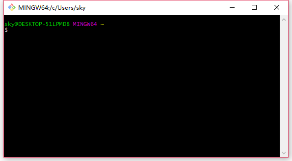
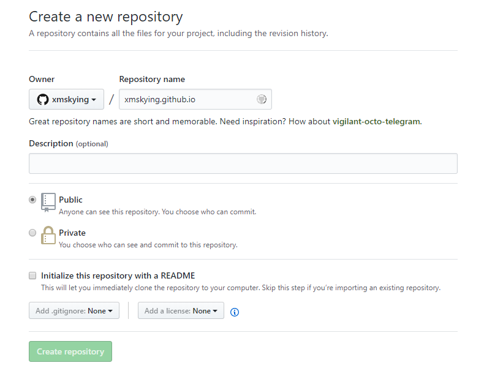

一直想做一个属于自己的个人网站，早在2017年就买了个域名：www.xmthing.com，然后也在搬瓦工上年付了一个便宜的vps主机，在上面部署了ss服务、WebStorm的激活域名、也用wordPress搭建了一个博客系统，那段时间也热情的发布了几篇文章，后面懒癌犯了，再加上那台vps访问越来越卡了，估计IP被墙了，也就一直没更新，同时那台vps也快到期了，不打算续了。
后来从网上经常看到Hexo这个字眼，也看到了别人的一些博客网站，域名都是使用的是github的二级域名，很好奇，遂开始研究。
百度、google了好一阵，发现别人的主页直接就是博客系统的主页，而我设想的是访问github的二级域名，比如我的：xmskying.github.io 默认访问的是我自定义的一个主页，【因为想在自己折腾点东西，把首页设计的好看一点。[撞到玻璃]】；然后在这个主页上，设置链接跳转到博客系统的主页上，即：xmskying.github.io/blog。
昨天晚上下班后，回到宿舍，稍作休息下，直接开启我那半个月未开机的电脑起来。不要怕，就是干！
…
…
…
…
…
折腾到快23点，依然不成功，头疼。
遂放弃…
今天早上还是不死心，我就不信了，不成功的话，就当做学习git操作吧。
继续折腾了，
续折腾了，
折腾了，
腾了，
了，
，
终于成功了！泪流满面得写下这篇文章，记录下过程。
好了，废话不多说，let’s do it…
1、在本机电脑上安装node.js环境
这步没什么好说的，就是直接去node.js的官网下载安装包来安装，就可以了。node.js官网。
在Windows上安装时务必选择全部组件，包括勾选Add to Path。
安装完成后，在Windows环境下，请打开命令提示符，然后输入node -v，如果安装正常，你应该看到一个v开头的版本号，比如我的：
1 | C:\Users\sky>node -v |
安装完node.js时，也默认帮我们安装了npm包管理器，什么是npm呢？简单点说：npm包管理器用于使用npm命令下载Node.js的依赖包【package manager】。
同样的你可以使用如下命令查看npm版本，比如我的：
1 | C:\Users\sky>npm -v |
2、安装git命令行工具
打开git官网，下载相应平台的安装包，然后一路安装下去即可。
安装完，在开始菜单里，应该就可以找到“Git”->“Git Bash”，打开它，就是显示一个命令行窗口，这就说明Git安装成功了！ 如下图：

然后在git命令行打上：1
2git config --global user.name "Your Name"
git config --global user.email "email@example.com"
上面的Your Name要修改成你自己的用户名，email@example.com要修改成你自己的邮箱地址
3、在github上创建一个repo
详细教程可查看github 官网教程
###简单说一下：
1、新建一个repo，名字为你的【用户名 + .github.io后缀】，比如我的：xmskying.github.io

2、clone到本地1
git clone https://github.com/username/username.github.io
3、打开clone下来的文件夹，在该目录下执行下面命令：1
echo "Hello World" > index.html
该命令会新建一个index.html文件，内容写入“Hello World”
4、提交到github上，1
2
3git add --all
git commit -m "Initial commit"
git push -u origin master
5、打开你的主页网址，例如：https://username.github.io，你会发现可以访问了，界面上出现了 Hello World 几个字。
6、接下去就不用我说了吧，以后这个index.html 可以修改成你想要自定义的首页样式，爱咋整咋整！
Enjoy it！
不知不觉写了这么长，发现hexo的还没讲到，还是放到下一篇去讲吧。/哭笑